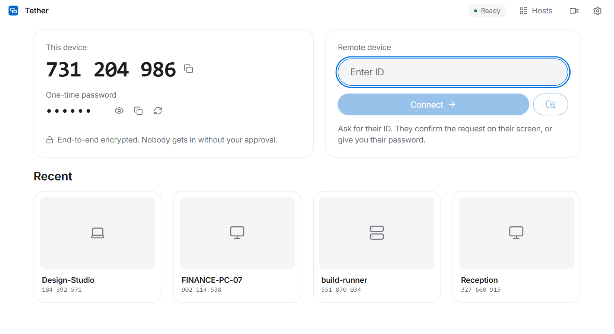
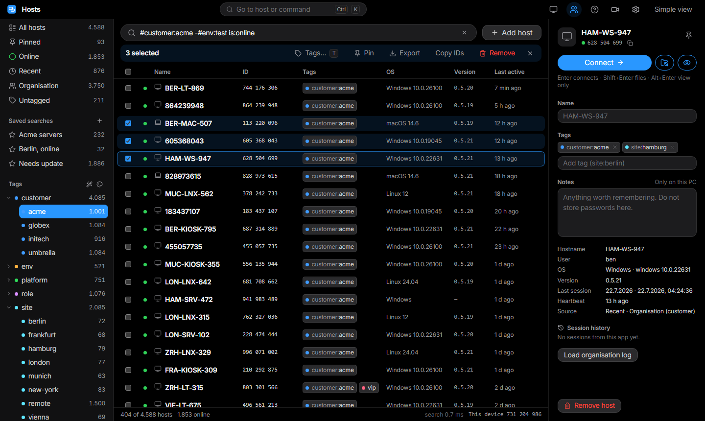
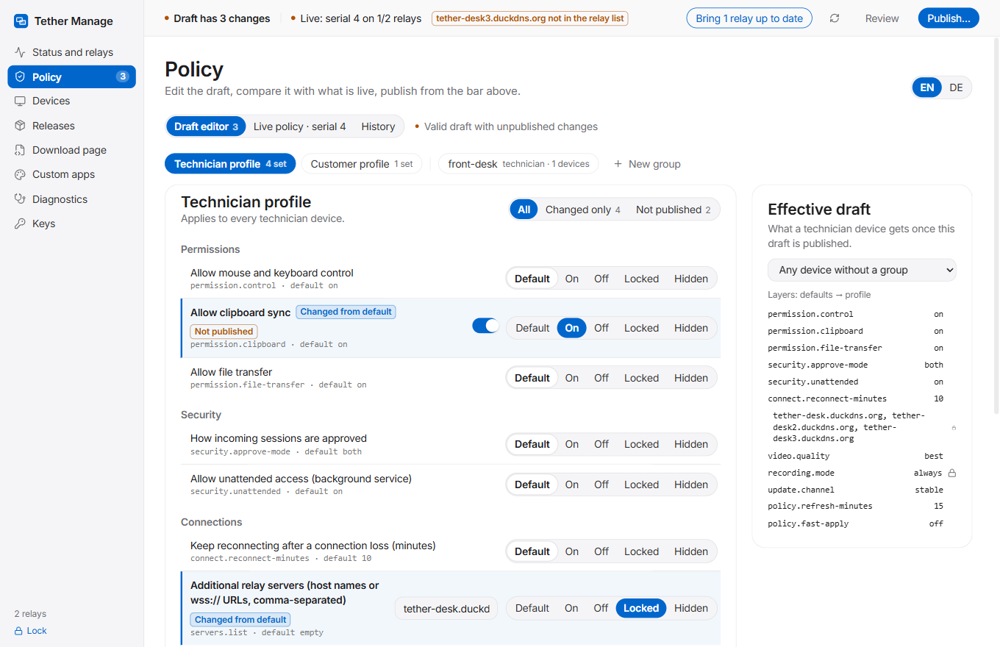

Tether: self-hosted remote desktop and remote support
A free, open-source alternative to TeamViewer and AnyDesk that runs on your own server. End-to-end encrypted, fast, and built to work inside corporate networks.

Why teams choose Tether
Private
Sessions are end-to-end encrypted between the two devices. Your relay forwards ciphertext, and no vendor cloud sits in the middle. Security model
Fast
24–30 ms glass-to-glass at 2560×1440 and 57 fps on a GPU host, with hardware encoding and decoding. How it was measured
Gets through corporate networks
Only outgoing TCP 443, through system proxies and TLS inspection. The customer opens no ports. Details for IT
Quick support, nothing to install
TetherQS is one portable file for the customer: no installer, no admin rights, and you can brand it. TetherQS
Hundreds of hosts
Tags, saved searches, bulk actions and a command palette for large inventories. Advanced mode
Central management
Tether Manage signs policies and releases on the administrator's PC, with staged rollout of updates. Tether Manage
See it


Get started
There is no public Tether server and no generic download. Each deployment builds its own apps for its own relay. The step-by-step guide takes you from an empty server to the first session. To look first, open the browser demo: the real interface with sample data, connected to nothing.
- Put a relay on a Linux server with Docker or systemd.
- Build the apps for Windows and macOS with your relay's address and keys.
- Publish them to your users with Tether Manage.
Questions
Is Tether free?
Yes. Tether is open source under AGPL-3.0. You pay only for the server you run the relay on.
How is it different from RustDesk?
Tether uses the RustDesk core for capture, codecs, input and encryption, with its own apps, its own low-latency streaming profile, a transport that needs only TCP 443, and signed central management. RustDesk supports more platforms (Linux, Android, iOS, web) and has ready-made downloads; Tether has Windows and macOS apps that you build yourself.
Can the relay operator watch sessions?
Not by watching the traffic: the relay forwards ciphertext and never has the session keys. It knows device IDs, IP addresses and connection times, which is why you run it yourself.
My antivirus warns about a Tether file. Why?
Remote control tools are a category that scanners watch closely, and new, rarely downloaded files get machine-learning verdicts. The maintainer's release files are checked with Microsoft Defender and about 70 engines on VirusTotal. The results, including the detections that were found, are published in the release checks. Signing your builds reduces such warnings.
Which platforms are supported?
The apps run on Windows and macOS. The relay runs on Linux.
Where can I ask something?
In the discussions on GitHub. Bugs go to issues.